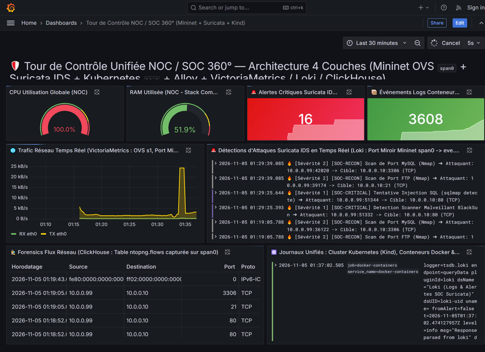
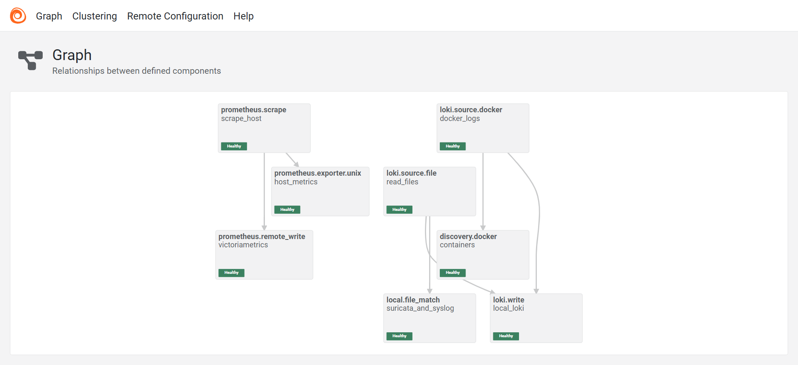
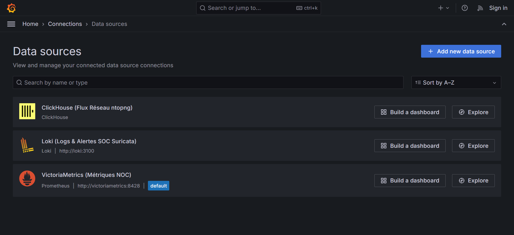
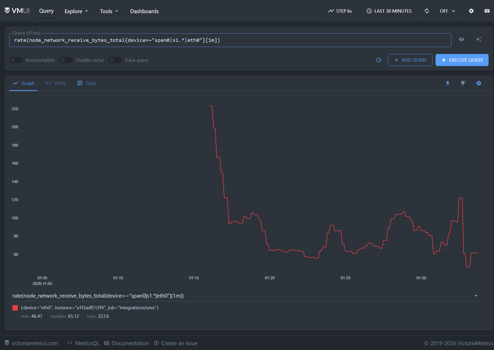
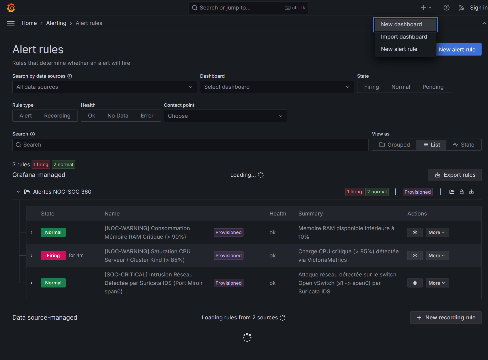

Conception en 4 couches logiques, simulation réseau SDN Open vSwitch avec Port Miroir (SPAN), détection d'intrusions Suricata IDS, cluster Kubernetes Cloud-Native (Kind), stockage haute performance (VictoriaMetrics, Loki, ClickHouse) et Alerting unifié sous Grafana.
Dans les infrastructures modernes, séparer les outils du NOC (Network Operations Center — performance et disponibilité) de ceux du SOC (Security Operations Center — détection d'intrusions et forensics) crée des silos critiques. Lorsqu'un serveur subit une dégradation de performance ou un pic de trafic, l'administrateur doit pouvoir déterminer en quelques secondes s'il s'agit d'une panne applicative ou d'une cyberattaque en cours.
Ce projet implémente une architecture d'observabilité à 360° structurée en 4 couches logiques, optimisée pour consommer seulement 1,5 Go de RAM au total tout en offrant les mêmes capacités d'analyse temps réel et d'investigation post-incident (Forensics) qu'un SOC d'entreprise.
| Couche Logique | Brique Initiale Classique | Choix Retenu & Optimisé | Justification Technique (DevOps / NetSecOps) |
|---|---|---|---|
| Couche 1 : Réseau & Endpoints | Switch Physique SPAN + Telegraf + Promtail | Mininet (Open vSwitch SPAN span0) + Kind (K8s) + Grafana Alloy |
Promtail étant déprécié, Grafana Alloy unifie la collecte des métriques et des logs en un seul binaire. Mininet émule le moteur réseau d'OpenStack (OVS) avec un vrai Port Miroir sans saturer le CPU. |
| Couche 2 : Sonde Réseau (NDR/IDS) | Suricata IDS + ntopng | Suricata IDS (-i span0 -k none) + Export Flux JSON |
Écoute passive en réception (RX) sur le port miroir span0 du switch Open vSwitch. Détecte en temps réel les injections SQL, scanners Web et scans de ports Nmap. |
| Couche 3 : Stockage Spécialisé | InfluxDB + ClickHouse + Loki | VictoriaMetrics + ClickHouse + Grafana Loki | VictoriaMetrics remplace InfluxDB avec une compatibilité totale Prometheus/Influx et une empreinte mémoire 4 fois inférieure. ClickHouse stocke les flux Forensics (ntopng.flows) et Loki indexe les alertes et journaux. |
| Couche 4 : Tour de Contrôle | Grafana + Alerting | Grafana 11 + Provisioning As-Code (Dashboards & Alertes) | Interface unique corrélant sur un seul écran les 3 bases de données et pilotant le moteur d'alerte multi-sources. |
Le script Python 02-network-mininet/topology_noc_soc.py construit une topologie d'entreprise autour d'un commutateur cœur Open vSwitch (s1) reliant trois espaces de noms réseau (Network Namespaces) :
h1_web (10.0.0.10/24) : Serveur Web HTTP de production (cible des requêtes et des attaques).h2_db (10.0.0.20/24) : Serveur de base de données interne.h3_atk (10.0.0.99/24) : Machine attaquante exécutant les scénarios de reconnaissance (Nmap) et d'exploitation Web (sqlmap, BlackSun).veth (span0-ovs <---> span0) pour le Port Mirroring OVS : Une sonde IDS comme Suricata (via AF_PACKET) capture uniquement les paquets entrants (RX). Une interface Linux de type dummy jetant les paquets en émission (TX), nous avons créé une paire veth dont l'extrémité span0-ovs est branchée sur le miroir du switch s1, faisant arriver 100 % des paquets dupliqués en réception (RX) sur span0.suricata -i span0 -k none) : Dans les espaces de noms Linux, le calcul des sommes de contrôle TCP est différé par le noyau. L'option -k none garantit que Suricata inspecte la couche 7 (HTTP/SQLi) sans écarter les trames virtuelles.IFNAMSIZ (15 caractères max) : Le nommage h3_atk (interface h3_atk-eth0 de 11 caractères) respecte la limite stricte de 15 octets imposée par le noyau Linux.
Plutôt que de maintenir deux agents distincts (Telegraf + Promtail) sur chaque machine, notre architecture déploie Grafana Alloy (fichier 01-central-stack/alloy/config.alloy). Son interface native sur le port 12345 permet de visualiser et déboguer en direct la santé de chaque pipeline d'ingestion :

Grâce au fichier 01-central-stack/grafana/provisioning/datasources/datasources.yml, Grafana se connecte dès son démarrage aux trois moteurs de stockage spécialisés :
/var/log/suricata/eve.json), les journaux système (/var/log/syslog) et les sorties standards de tous les conteneurs Docker et Pods Kubernetes (Kind).ntopng.flows pour les investigations réseau sur de longues périodes.

Un système d'observabilité n'est complet que s'il est capable d'alerter les équipes d'astreinte et de déclencher des actions automatiques sans intervention humaine. Dans notre architecture, l'alerting est géré en Alerting-as-Code via le fichier 01-central-stack/grafana/provisioning/alerting/alerts.yml.

| Brique d'Alerting | Rôle Fonctionnel | Implémentation dans notre Architecture NOC/SOC |
|---|---|---|
| 1. Règles d'Alerte (Alert Rules) |
Évaluent périodiquement une requête PromQL (VictoriaMetrics), LogQL (Loki) ou SQL (ClickHouse) par rapport à un seuil. |
• Règle SOC Critique : sum(count_over_time({job="suricata-ids"} |= "\"event_type\":\"alert\"" [10m])) > 0 (Déclenchement immédiat for: 0s dès qu'une attaque est vue sur span0).• Règle NOC CPU : Charge CPU > 85 % pendant 1m.• Règle NOC RAM : Mémoire utilisée > 90 % pendant 2m.
|
| 2. Points de Contact (Contact Points) |
Définissent les canaux de destination où les notifications sont poussées. |
• ChatOps : Discord, Slack, Microsoft Teams, Telegram ou Email SMTP. • SOAR / Remédiation Active : Webhook HTTP envoyant le JSON de l'alerte vers un script Python ou n8n pour bloquer automatiquement l'IP attaquante sur Open vSwitch ( ovs-ofctl add-flow s1 ip,nw_src=<IP>,actions=drop).
|
| 3. Politiques de Routage (Notification Policies) |
Aiguillent chaque alerte vers le bon canal selon ses étiquettes (labels) et gèrent le regroupement. |
• Si layer=soc & severity=critical ➔ Envoi immédiat à l'astreinte Cybersécurité.• Si layer=noc ➔ Regroupement par hôte (group_wait: 30s) vers l'équipe Infrastructure pour éviter la fatigue d'alerte (Alert Fatigue).
|
[SOC-CRITICAL] Intrusion Réseau Détectée par Suricata IDS passe à l'état Firing suite à un scan Nmap ou une injection SQL depuis 10.0.0.99, le Webhook Grafana peut exécuter automatiquement sur le switch Open vSwitch s1 :
sudo ovs-ofctl add-flow s1 "priority=500,ip,nw_src=10.0.0.99,actions=drop"h2_db.
L'intégralité du code source, des scripts de simulation réseau Mininet, des manifestes Kubernetes Kind et des fichiers de provisioning Grafana (Sources de données, Tableaux de bord JSON et Règles d'Alerting) est versionnée et disponible sur le dépôt GitHub officiel :
https://github.com/eMb0811/architecture-noc-soc-360-lab